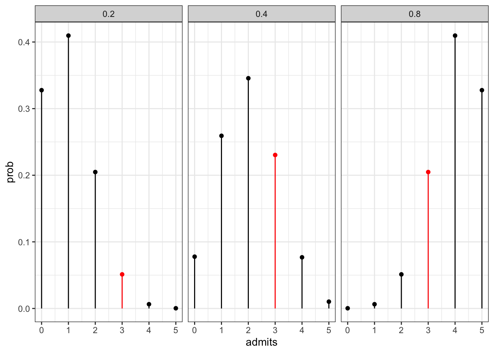
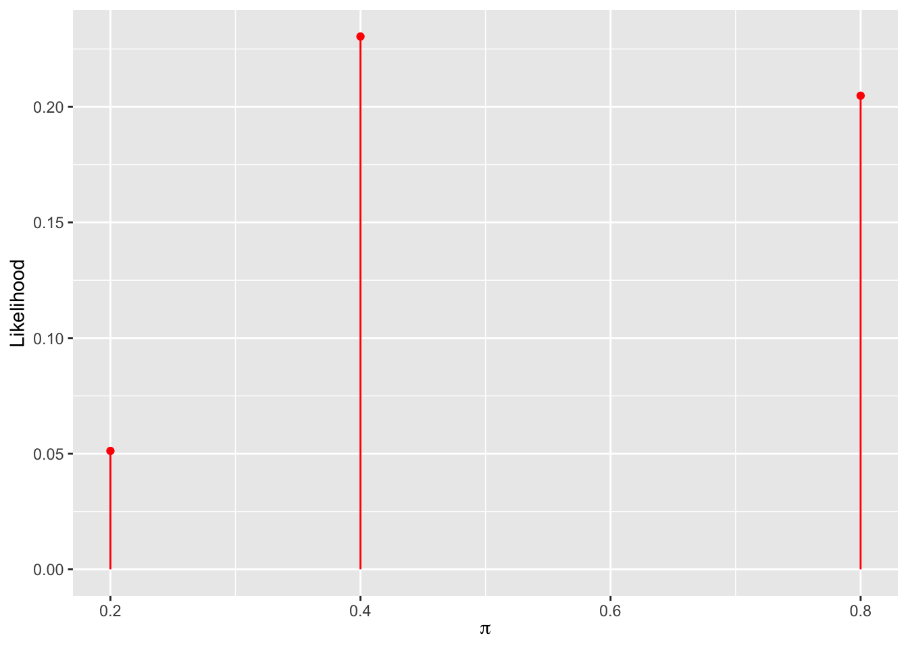

In Bayesian Statistics, we use a prior expectation (a distribution) and data which come together to generate a posterior. We can then use the posterior as the new prior and combine it with new data to obtain an updated prior. We continue doing this as new data comes in.
This is as opposed to the Frequentist approach where the data determines everything.
Assumptions in Bayesian Analyses
We make choices that determine how much weight is applied to the prior versus the data in the creation of the posterior distribution. The weight attached to the prior is determined by the distribution and its parameters. For example, in the case of a normal prior, we can choose a large standard deviation if we are uncertain about our prior estimate (and/or we know that we have high quality data) and a small standard deviation if we are more certain about the prior.
Interpretations
Bayesians interpret probability as a measure of the relative plausibility of an event. Frequentists interpret probability as a measure of the long-run relative frequency of a repeatable event.
Same Data, Different Priors
We have the following scenarios. Both have the same data (ten successes out of ten trials), but we intuitively have different priors.
Example 1: Kaya claims that they can predict the outcome of a coin flip. To test their claim, you flip a fair coin 10 times and they correctly predict all 10.
Example 2: Fan claims that they can distinguish natural and artificial sweetners. To test their claim, you give them 10 sweetner samples and they correctly identify each.
We do not believe that Kaya can predict the outcome of a coin flip because our prior is strongly against this hypothesis.
Hypothesis Testing
Discussion Question
Suppose that during a recent doctor’s visit, you tested positive for a very rare disease. If you only get to ask the doctor one question, which would it be?
What is the chance that I actually have the disease? \(\displaystyle{\left(\mathcal{P}\left[\text{disease} | +\right]\right)}\)
If I don’t have the disease, what is the probability that I tested positive? \(\displaystyle{\left(\mathcal{P}\left[+ | \text{disease}^c\right]\right)}\)
Probability Review
Consider the following two-way table on mammogram results.
Cancer
No Cancer
Total
Mammo+
85
990
1075
Mammo-
15
8910
8925
Total
100
9900
10000
Let \(A\) represent the event that a mammogram is positive for breast cancer, ansd \(B\) represent the event that a woman has cancer.
\(\mathcal{P}\left[\text{Cancer}\right] = \frac{100}{10000} = 1\%\) is called the marginal probability of \(\text{Cancer}\) since we can calculate the probability using only the aggregate numbers in the “margins” of the table.
\(\mathcal{P}\left[\text{Cancer and }+\right] = \frac{85}{10000} = 0.85\%\) is called a joint probability since it is the probability of two things happening simultaneously.
\(\mathcal{P}\left[\text{Cancer} | +\right] = \frac{85}{1075} \approx 7.9\%\) is called a conditional probability.
Bayes Rule
Consider the breast cancer screening example above. Suppose that a 40 year old woman, Maya, goes to a clinic for a screening. Assume further that the prevalence of cancer for 40 year old women is 1%. From the example above, we see that Maya’s likelihood of having cancer has risen. What is the likelihood that Maya has cancer?
We can call these quantities likelihoods, as they compare the likelihood of a positive mammogram under the two scenarios. Notation can be confusing, as \(L\left(⋅∣A\right)=\mathcal{P}\left(A∣⋅\right)\).
L(B∣A)=P(A∣B)=0.85 (our data of a positive mammogram are highly compatible with cancer)
L(BC∣A)=P(A∣BC)=0.10 (data of a positive mammogram are less compatible with no cancer)
When a woman has breast cancer, we are much more likely to get the data of a positive mammogram than we are when a woman is cancer-free. Still, cancer is not common.
Let \(Y\) be a discrete random variable with probability mass function (\(\text{pmf}\)) \(f\left(y\right)\). Then the \(\text{pmf}\) defines the probability of any given \(y\) as \(f\left(y\right) = \mathcal{P}\left[Y = y\right]\) with the following properties:
\(\sum_{y\in Y}{f\left(y\right)} = 1\)
\(0\leq f\left(y\right) \leq 1\)
An Example: PhD Admissions
Let \(Y\) be a random variable that represents the number of applicants admitted to a PhD program that has received applications from 5 prospective students. That is, \(\Omega_y = \{0,1,2,3,4,5\}\). We are interested in the parameter \(\pi\), which represents the probability of acceptance to this program. For demonstrative purposes, we will only consider three possible values of \(\pi:~0.2,~0.4,~\text{and}~0.8\)., where the prior distribution on the probabilities is as follows:
\(\pi\)
0.2
0.4
0.8
\(f\left(\pi\right)\)
0.7
0.2
0.1
Given this prior, what is the likelihood pf each of the admission probabilities if…
all five applicants were admitted?
none of the five applicants were admitted?
The Binomial Model
In the example above, the admission variable is modeled by a binomial model with probability of admission equal to \(\pi\). That is,
\[Y | \pi \sim \text{Bin}\left(n, \pi\right)\]
Here we have the conditional probability mass function:
\[f\left(y | \pi\right) = \binom{n}{y}\pi^y\left(1 - \pi\right)^{n - y} \text{ for } y \in \left\{0, 1, 2, 3, 4, 5\right\}\]
We can examine the probabilities of number of admits given our plausible admissions probabilities.
Let’s assume that we’ve admitted three of the five applicants. The plot below shows the probabilities given the acceptance results.
admit_results %>%mutate(color =ifelse(admits ==3, "red", "black")) %>%ggplot() +geom_point(aes(x = admits, y = prob, color = color)) +geom_segment(aes(x = admits, xend = admits, y =0, yend = prob, color = color)) +scale_color_manual(values =c("black", "red")) +theme_bw() +theme(legend.position ="None") +facet_wrap(~pi, ncol =3)

Now lets compute the likelihood, \(L\left(\pi | \left(y = 3\right)\right)\).
admit_results %>%filter(admits ==3) %>%ggplot() +geom_point(aes(x = pi, y = prob), color ="red") +geom_segment(aes(x = pi, xend = pi, y =0, yend = prob), color ="red") +labs(x =TeX(r"(\pi)"),y ="Likelihood" )

COME BACK LATER AND WORK THROUGH EXAMPLE IN SLIDE DECK
Summary: Steps of Bayesian Analysis
Every Bayesian analysis consists of three common steps.
1.Construct a prior model for your variable of interest, \(\pi\). A prior model specifies two important pieces of information: the possible values of \(\pi\) and the relative prior plausibility of each.
2.Upon observing data \(Y = y\), define the likelihood function \(L\left(\pi | y\right)\). As a first step, we summarize the dependence of \(Y\) on \(\pi\) via a conditional probability mass function \(f\left(y | \pi\right)\). The likelihood function is then defined by \(L\left(\pi | y\right) = f\left(y | \pi\right)\) and can be used to compare the relative likelihood of different \(\pi\) values in light of data \(Y = y\).
Build the posterior model of \(\pi\) via Bayes’ Rule. By Bayes’ Rule, the posterior model is constructed by balancing the prior and the likelihood:
Consider the following individuals who all have different priors.
Katie thinks that it is extremely difficult to get into this program.
Sha’Carri thinks that it is difficult to get into this program.
Caeleb does not have any strong opinions whether it is difficult or easy to get into this program.
Sunisa thinks that it is easy to get into this program.
Simone thinks that it is extremely easy to get into this program.
Katie’s prior puts lots of the probability mass towards low probabilities of admission. Caeleb has a uniform prior. We can use the Beta Prior Model to describe each of the prior distributions for our individuals.
An applicant to a small graduate program wants to know \(\pi\), the probability of admission, so they can determine how many programs to which they should apply. Based on commentary on The GradCafe about similar programs, the applicant thinks that \(\pi\) is likely to be in the range of \(0.05\) to \(0.25\).
Discussion Question
Is the distribution below a reasonable choice of prior, given the description above?
Think of \(\alpha\) as the number of prior successes and \(\beta\) as the number of prior failures.
We say that \(f\left(\pi\right)\) is a conjugate prior for \(L\left(\pi | y\right)\) if the posterior \(f\left(\pi | y\right) \propto f\left(\pi\right)L\left(\pi | y\right)\). Thus, the Beta distribution is a conjugate prior for the Binomial likelihood model because the posterior also follows a Beta distribution.
Choosing \(\alpha\) and \(\beta\)
Note that \(\alpha\) is often interpreted as the approximate prior number of successes, and \(\beta\) is often interpreted as the approximate prior number of failures, with \(\alpha + \beta\) as the approximate prior sample size.
An Update to the Grad Program Admissions Example
The applicant decides to collect some data on social media and identifies 50 people who applied to the program and asks them whether they were accepted or not. It turns out that 25 of them were! What is the posterior distribution of \(\pi\) after having observed this data?
\[\begin{align} \pi | y &\sim \text{Beta}\left(\alpha + \beta, \beta + n - y\right)\\
\pi | y &\sim \text{Beta}\left(5 + 25, 35 + 50 - 25\right)\\
\pi | y &\sim \text{Beta}\left(30, 60\right)\\
\end{align}\]
This follows from multiplying the prior and the likelihood function together, where the bases (\(\pi\) and \(1 - \pi\)) are common within the two mathematical models and so we sum the exponents.
# A tibble: 2 × 2
binary n
<chr> <int>
1 FAIL 11
2 PASS 9
Sequential Updating
With basic sequential updating, the order in which we observe the subsets of data does not impact the final posterior model. In fact, it doesn’t matter if we observe all of the data at once. If we do want to weight recent data more heavily than older data, we’ll need to use something other than sequential updating.